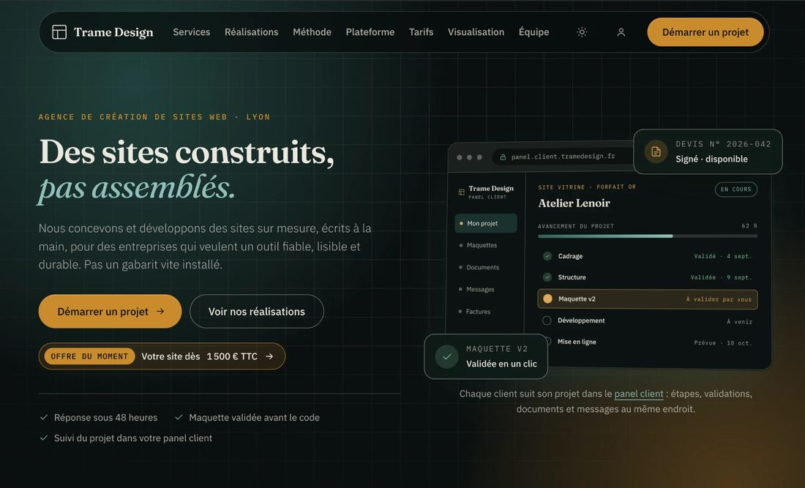
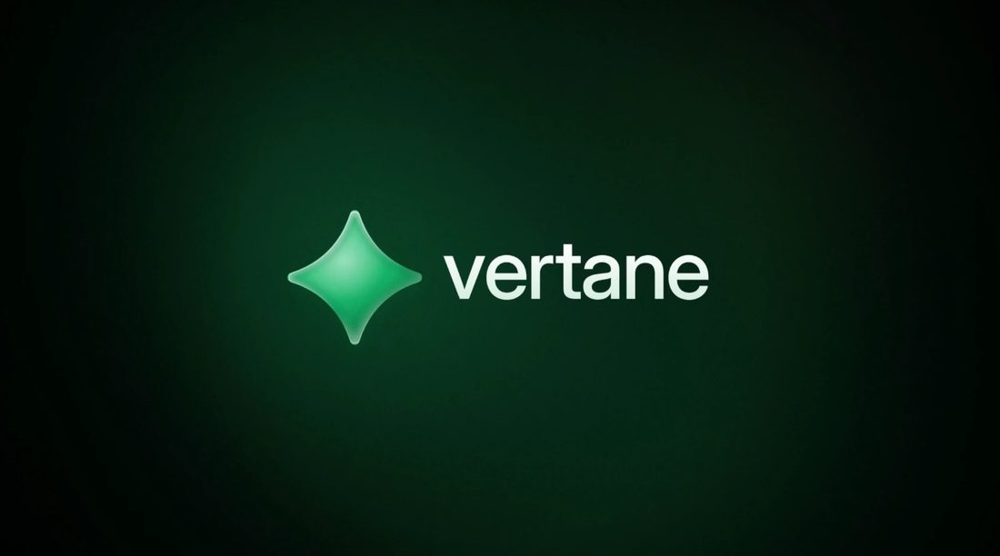
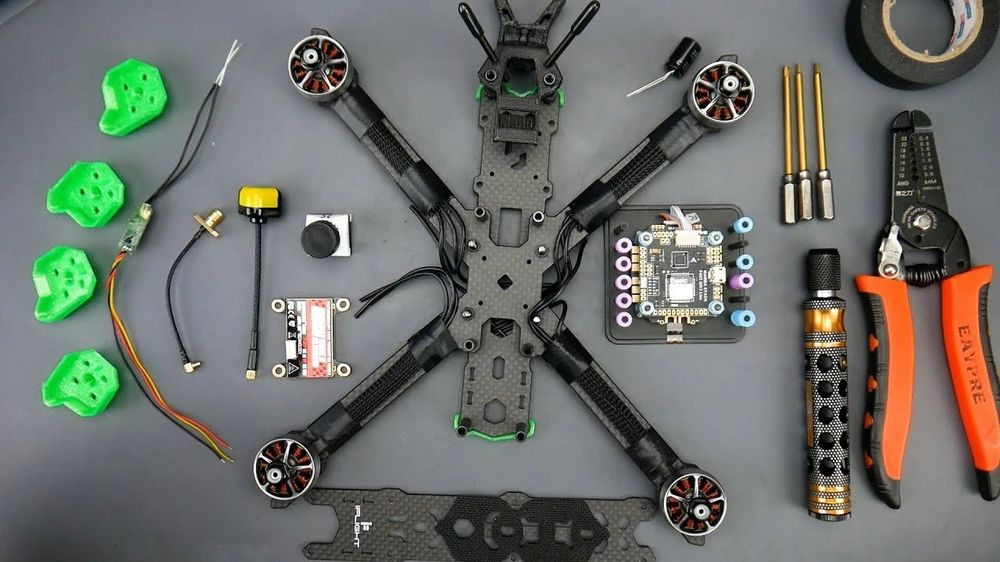
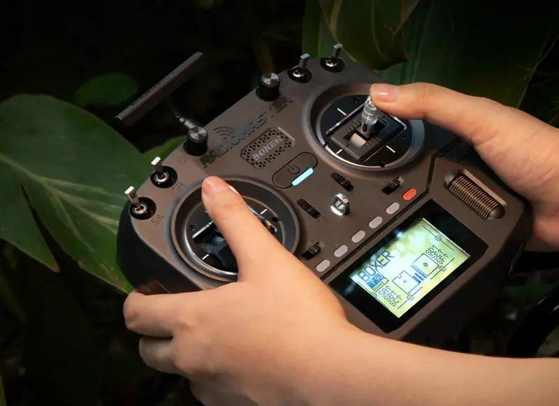

Drones
Pilotage stabilisé et FPV, conception et assemblage de mes propres appareils.
BTS Géomètre-Topographe en alternance. Le terrain, la précision et la technologie, réunis.
Vidéo indisponible ici. Elle se lit quand le site est en ligne, avec le dossier « videos » à côté de la page.
Ce que j'apporte
Pilotage stabilisé et FPV, conception et assemblage de mes propres appareils.
Usage avancé des IA génératives pour analyser, automatiser et créer.
Fondateur de Trame Design : sites web et identités visuelles.
Mon projet
Le métier de géomètre réunit ce qui m'anime : *le terrain, *la *précision et *la *technologie. Drones, photogrammétrie et modélisation 3D transforment aujourd'hui le relevé topographique. Je souhaite y apporter ma maîtrise du drone et des outils numériques, tout en apprenant le métier aux côtés de professionnels.
Compétences
Des outils du terrain aux outils numériques.
Du montage au vol de précision.
Formation télépilote A1/A3 · catégorie Ouverte (DGAC)
Analyser, automatiser, créer.
De la maquette à la mise en ligne.
Les outils que j'utilise.
Acquis du bac STMG.
Ce sur quoi vous pouvez compter.
Parcours
École SEPR, Lyon
Pôle Géomètre et Topographie
Lycée Aux Lazaristes La Salle, Lyon Croix-Rousse
Terminale en cours · Spécialité Marketing
Maristes Saint-Paul, Lyon
Projets & expériences
Des projets concrets, menés de bout en bout.

2026
Agence web en cours d'immatriculation. Conception de sites et d'identités visuelles, de la maquette à la mise en ligne, en relation directe avec les clients.

Projet
Une marque de smartphone modulaire, le Vertane M1 : site vitrine et boutique, configurateurs, vue éclatée en 3D, simulateur du système Vertane OS, présentation de 26 diapos et dossier de fabrication.

Projet perso
Choix des composants, assemblage, câblage, paramétrage du contrôleur de vol et réglages en conditions réelles sur des modèles FPV.

Projet perso
Prises de vue aériennes et vols de précision, une pratique directement transposable au relevé topographique par drone.
Vidéo indisponible ici. Elle se lit quand le site est en ligne, avec le dossier « videos » à côté de la page.
Vidéo explicative
Les composants et l'assemblage, le réglage du contrôleur de vol, le pilotage, les usages possibles jusqu'à la topographie, et les règles pour voler.
Ce que je recherche
Contact
Vous cherchez un·e alternant·e motivé·e pour la rentrée 2027 ? Parlons-en.
Télécharger mon CV